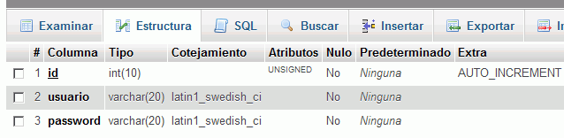
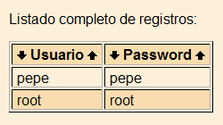

2. Creación de la base de datos
- Entrar en phpMyAdmin como usuario root y crear un usuario de MySQL con nombre iwb_registros, contraseña iwb_registros y base de datos iwb_registros.
- Entrar en phpMyAdmin como usuario iwb_registros y crear en la base de datos iwb_registro las tablas usuarios_1 y usuarios_2 con los siguientes campos:
- id INTEGER UNSIGNED NOT NULL AUTO_INCREMENT
- usuario VARCHAR(20)
- password VARCHAR(20),
- PRIMARY KEY(id)
- Hacer una captura de pantalla donde se vea la estructura de la tabla y guardarla como phpmyadmin_1.png:

- Insertar dos registros en la tabla usuarios_1:
- usuario: root. password: root.
- usuario: nombre alumno. password: nombre alumno.
- Insertar dos registros en la tabla usuarios_2:
- usuario: admin. password: admin.
- usuario: apellido alumno. password: apellido alumno.
- Modificar los ficheros funciones.php de cada aplicación para que funcione cada una con una tabla:
- registro_1 con la tabla usuarios_1
- registro_2 con la tabla usuarios_2
- Entrar en la aplicación registro_1 como usuario root y mostrar la lista de usuarios. Hacer una captura de la pantalla y guardarla como phpmyadmin_2a.png:

- Entrar en la aplicación registro_2 como usuario admin y mostrar la lista de usuarios. Hacer una captura de la pantalla y guardarla como phpmyadmin_2b.png: